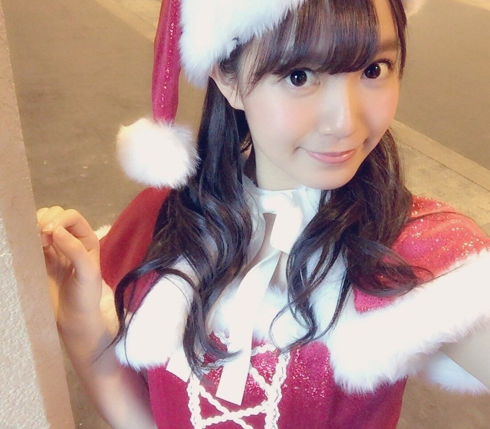
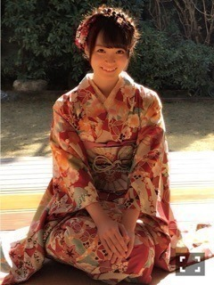

| 2016/12 22 Thu | ひめたん-0o0-その690 |

ひめたんサンタ～
土日は名古屋で握手会でした！
全国握手会ではさゆとペア。
サユリストの皆さん
ひめとも仲良くして下さって
ありがとうございました(^o^)
私に会いに来てくれた皆さんありがとう♡
直接感謝の気持ちが伝えられる場は
とても貴重な時間。大切。
年内最後だからと
遠征して下さった方もたくさんいて
嬉しかったです！！
そして久々の名古屋てことで
名古屋でしかお会いできない方には
元気な姿を見てもらえてよかった！！
次は年始、京都＼(^o^)／
日曜日は個別握手会でした～
ハリボゥ！！
ちーのブログにあったけど
ハリボゥのことずっと愛でてた。笑
最近、ワンちゃん飼いたい衝動に駆られてて
メンバーにはあんたは世話できないからと
全力で止められるから無理なんだけど
だからハリボゥわしゃわしゃしてた。
あ、ハリボゥってのは
ちーのハリネズミのぬいぐるみね。
家から持って来たんですって。可愛いかよ。
でね、そう、握手会！
こちらもたくさんの方が来てくれて
すごい待ったよ～とか
人いっぱいだね～とか
皆さん言ってくれて嬉しかった(´；ω；｀)
いや並んでる皆さんは大変なんだよね。
寒い中、一日中ありがとう。
私が待つ側なことが多かったから
列が途切れないなんて
ちょっと前までは考えられなかった話だから
時間中ずっとアイドルでいられることが
幸せだなと改めて感じた一日でした。
日曜の夜は、らじらー！サンデー
ゲストは声優アーツに指出毬亜さん、
鳥部万里子さん、日岡なつみさん、
乃木坂から星野みなみちゃんでした。
乃木坂回は年内最後ということで
今年もやりました！流行語大賞！
てことで2016年も
らじらー聴いてくれてありがとう(^o^)
来年もよろしくね！
オリラジさんとは大晦日、NHKで
会えるかな～なんて話をしてきました
次回の放送では裏話できたら楽しそう！
このタイミングだから言うけど
らじらー公式ツイッター(@nhk_radirer)
いつもキレッキレで好きです。笑
ここでお知らせ～
12/31、NHKラジオ第一にて放送の
オンデマンドで聴く！
全国ご当地番組詰め合わせ にて
コメント出演しますのでそちらも是非。
B.L.T.2月号！

着物を着ました。
なんだか凄く褒めてもらっちゃって
私、和装、意外といけるんだなと思いました。
夏の浴衣もポップな柄で可愛かったし
今回の着物もポップな柄で可愛い！(語彙力)
B.L.T.さんいつもありがとうございます！

この写真すごい好き。
～お知らせ～
雑誌
12/31 日経エンタテインメント！
アイドルSpecial 2017
1/7 BOMB2月号
WEB
12/21～ ソニトピ
ラジオ
12/31 オンデマンドで聴く！
全国ご当地番組 詰め合わせ
TV
12/23 乃木坂46 Merry Xmas Show 2016
12/23 Mステスーパーライブ2016
12/29 乃木坂工事中SP
12/31 第67回NHK紅白歌合戦
1/1 CDTV年越しプレミアライブ
ライブ
2/20 5th YEAR BIRHTDAY LIVE
2/21 5th YEAR BIRHTDAY LIVE
2/22 5th YEAR BIRHTDAY LIVE
(＊´・ω・＊)
コメント(684)
2016/12/22 23:36